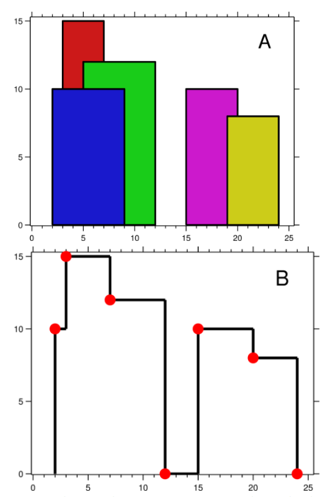
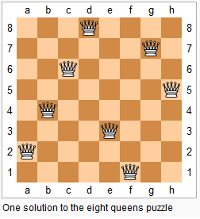
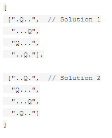
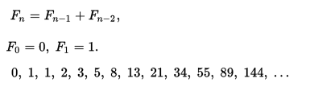

Hard Questions
Hard 1
Word Break II
Given a string s and a dictionary of words dict, add spaces in s to construct a sentence where each word is a valid dictionary word.
Return all such possible sentences.
For example, given
s = "catsanddog"
dict = ["cat", "cats", "and", "sand", "dog"]
A solution is ["cats and dog", "cat sand dog"]
Hard 2
Palindrome Partitioning II
Given a string s, partition s such that every substring of the partition is a palindrome.
Return the minimum cuts needed for a palindrome partitioning of s.
For example, given s = "aab",
Return 1 since the palindrome partitioning ["aa","b"] could be produced using 1 cut
Hard 3
Skyline Problem
A city's skyline is the outer contour of the silhouette formed by all the buildings in that city when viewed from a distance. Now suppose you aregiven the locations and height of all the buildings as shown on a cityscape photo (Figure A), write a program to output the skylineformed by these buildings collectively (Figure B).

The geometric information of each building is represented by a triplet of integers [Li, Ri, Hi], where Li and Ri are the x coordinates of the left and right edge of the ith building, respectively, and Hi is its height. It is guaranteed that 0 ≤ Li, Ri ≤ INT_MAX, 0 < Hi ≤ INT_MAX, and Ri - Li > 0. You may assume all buildings are perfect rectangles grounded on an absolutely flat surface at height 0.
For instance, the dimensions of all buildings in Figure A are recorded as: [ [2 9 10], [3 7 15], [5 12 12], [15 20 10], [19 24 8] ].
The output is a list of "key points" (red dots in Figure B) in the format of [ [x1,y1], [x2, y2], [x3, y3], ... ]that uniquely defines a skyline. A key point is the left endpoint of a horizontal line segment. Note that the last key point, where the rightmost building ends, is merely used to mark the termination of the skyline, and always has zero height. Also, the ground in between any two adjacent buildings should be considered part of the skyline contour.
For instance, the skyline in Figure B should be represented as:[ [2 10], [3 15], [7 12], [12 0], [15 10], [20 8], [24, 0] ].
Notes:
- The number of buildings in any input list is guaranteed to be in the range
[0, 10000]. - The input list is already sorted in ascending order by the left x position
Li. - The output list must be sorted by the x position.
- There must be no consecutive horizontal lines of equal height in the output skyline. For instance,
[...[2 3], [4 5], [7 5], [11 5], [12 7]...]is not acceptable; the three lines of height 5 should be merged into one in the final output as such:[...[2 3], [4 5], [12 7], ...]
Hard 4
N-Queen Problem
The n-queens puzzle is the problem of placing n queens on an n×n chessboard such that no two queens attack each other.

Given an integer n, return all distinct solutions to the n-queens puzzle.
Each solution contains a distinct board configuration of the n-queens' placement, where 'Q' and '.' both indicate a queen and an empty space respectively.
For example,
There exist two distinct solutions to the 4-queens puzzle:

Hard 5
Given an array of integers, every element appears twice except for one. Find that single one. Note:Your algorithm should have a linear runtime complexity. Could you implement it without using extra memory?
Hard 6
Write a function that takes a string as input and returns the string reversed.
Ex.
Given s = "hello", return "olleh".
Hard 7
Given an integer (signed 32 bits), write a function to check whether it is a power of 4.
Ex.
Given num = 16, return true. Given num = 5, return false.
Hard 8
Write a function that takes a list of strings an prints them, one per line, in a rectangular frame. For example the list ["Hello", "World", "in", "a", "frame"] gets printed as:
*********
* Hello *
* World *
* in *
* a *
* frame *
*********
Hard 9
Write a function that computes the list of the first 100 Fibonacci numbers.
Ex.

Hard 10
Write a function that merges two sorted lists into a new sorted list
Hard 11
Write a function that returns the elements on odd positions in a list
Hard 12
Given an int array, return a new array with double the length where its last element is the
same as the original array, and all the other elements are 0. The original array will be length 1 or more. Note: by default, a new int array contains all 0's.
Ex.
makeLast([4, 5, 6]) → [0, 0, 0, 0, 0, 6]
makeLast([1, 2]) → [0, 0, 0, 2]
makeLast([3]) → [0, 3]
Hard 13
Given three ints, a b c, return true if two or more of them have the same rightmost digit. The ints are non-negative. Note: the % "mod" operator computes the remainder, e.g. 17 % 10 is 7.
Ex.
lastDigit(23, 19, 13) → true
lastDigit(23, 19, 12) → false
lastDigit(23, 19, 3) → true